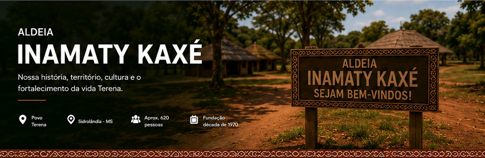

Início › Aldeias › Inamaty Kaxé › Sobre a Aldeia
INAMATY KAXÉInício da AldeiaSobre a AldeiaHistóriaAnciãos(ãs)CulturaNotíciasProjetosJuventudeArtesanatoEventosLocalizaçãoGaleriaContato
Sobre a Aldeia
Território, comunidade e memória.
Um lugar de convivência e identidade
A história da Inamaty Kaxé é contada a partir da relação entre território, comunidade e cultura. O cotidiano reúne famílias, práticas comunitárias, educação e a transmissão de conhecimentos entre gerações.
Este espaço apresenta informações básicas para que visitantes conheçam a aldeia e encontrem os conteúdos específicos nas demais seções do portal.
Informações
NomeInamaty Kaxé
PovoTerena
MunicípioSidrolândia – MS
LocalizaçãoTerra Indígena Terena
